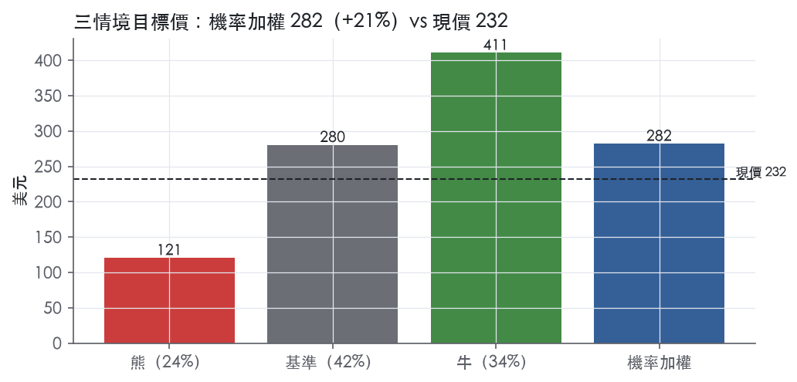
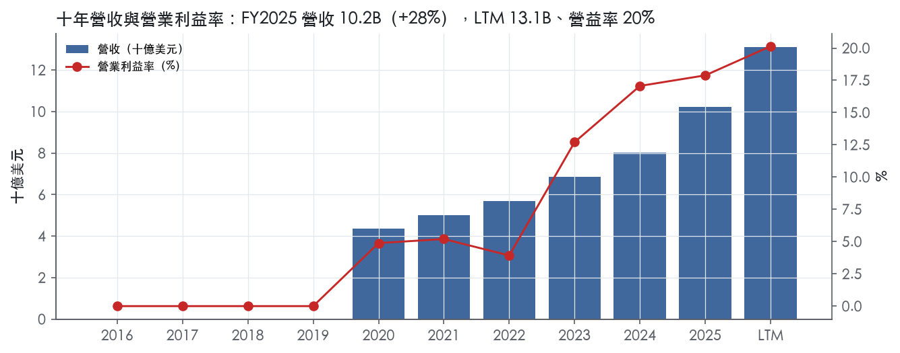
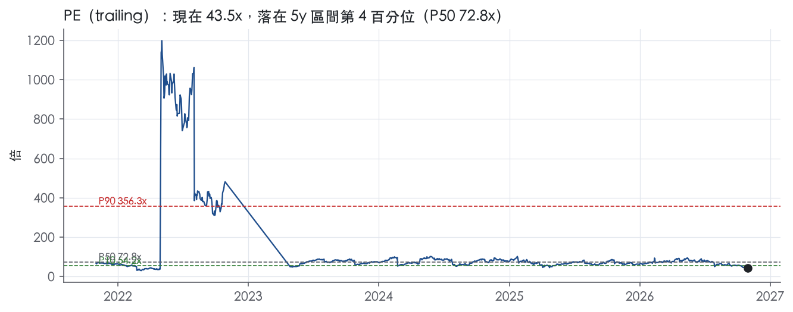
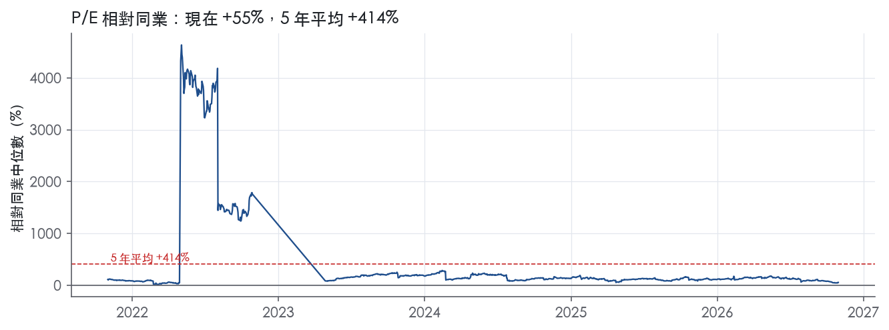
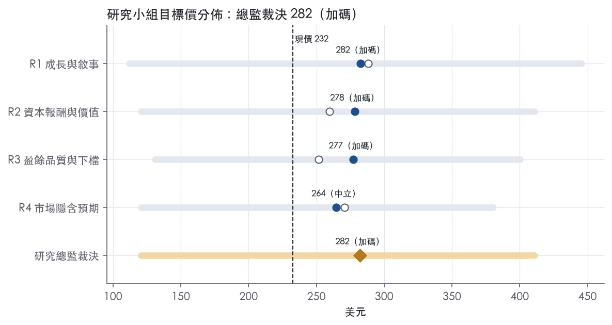
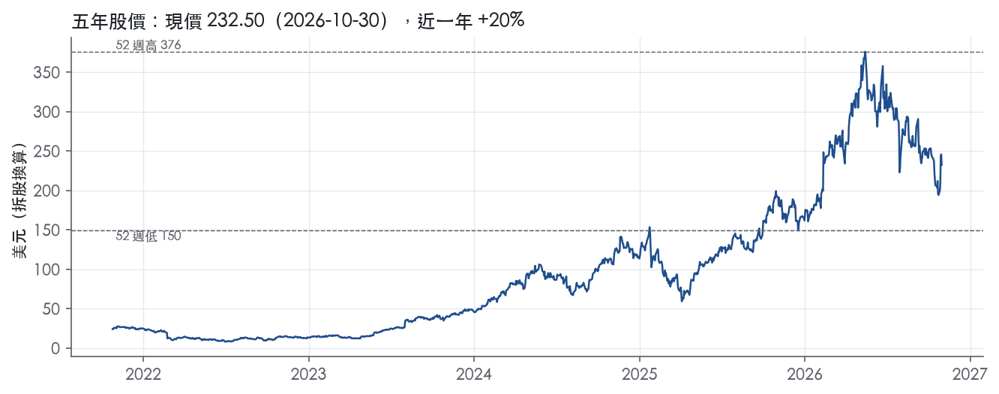

評等總表 › 工業 › VRT
訂單撐兩年盈餘，倍數不擴張，看多｜評等 加碼｜目標價 282
| 報告日 | 評等 | 目標價 | 當時股價 | 超額報酬 |
|---|---|---|---|---|
| 2026-10-30 | 加碼 | 282 | 232 | +11.4% |
| 評等 | 加碼 |
| 12 個月目標價 | 282 美元 |
| 現價 | 232.50 美元（2026-10-30） |
| 預期報酬 | 股價 +21.3%＋股息 0.1%＝總報酬 +21.4%；同業籃門檻 10.0%，超額 +11.4% |
| 估值方法 | P/E 30.0x，套在第 5–8 季的EPS（也就是一年後的未來四季） |
| 三情境 | 熊 121／基準 280／牛 411 |
| 研究流程 | 四位研究員兩輪辯論＋研究總監裁決 |
| 資料來源 | SEC EDGAR XBRL、Tiingo、FRED（全免費） |
訂單撐兩年盈餘，倍數不擴張，看多（研究總監裁決，四位研究員兩輪辯論後）
評等 加碼｜12 個月目標價 282 美元（總監三情境機率加權 286 與研究員中位數 278 各半）｜現價 232.50（2026-10-30）
預期報酬：股價 +21.3%＋股息 0.1%＝總報酬 +21.4%。同業籃門檻 10.0%，超額 +11.4%。
估值方法：P/E 30.0x，套在第 5–8 季的EPS（也就是一年後的未來四季）。三情境：熊 121（24%）／基準 280（42%）／牛 411（34%）。
什麼會讓研究總監改變看法：FY2026 年底在手訂單低於 15.0B、10-K 揭露遞延／取消，或任一超大型雲端業者下修 2027 年資本支出，我轉中性並把倍數降到 P25 附近；FY2027Q2 有機訂單年增仍逾 20% 且 Q1 GAAP 營益率逾 20%，我上修 y3 並把倍數升到 P50。
| 過去四季（實際，FY2026Q3） | 未來四季 | 第 5–8 季 | 第 9–12 季 | |
|---|---|---|---|---|
| 營收（B） | 13.1B | 17.8B | 22.1B | 23.4B |
| 營收成長 | 35.3% | 36.0% | 24.0% | 6.0% |
| 營業利益率 | 20.1% | 21.5% | 22.0% | 21.5% |
| EPS（美元） | 5.35 | 7.39 | 9.35 | 9.64 |
| EPS 成長 | 101.9% | 38.0% | 26.6% | 3.2% |
| 每股股息（美元） | — | 0.00 | 0.00 | 0.00 |
| P/E（現價） | 43.5x | 31.5x | 24.9x | 24.1x |
| 股息殖利率（現價） | 0.1% | — | — | — |
過去四季為申報數字；預測為研究總監的假設、程式計算。倍數與殖利率都用現價計算，用來看現價對應各期獲利的高低。
| 情境 | 機率（歷史） | 故事 | 未來四季營收成長 | 第 5–8 季營益率 | 倍數 | 目標價 | 股價漲跌 |
|---|---|---|---|---|---|---|---|
| 熊 | 24%（23%） | 對應風險表第 3 條（客戶 AI 資本支出放緩）觸發、第 2 條（Item 1A 在手訂單遞延）傳導、第 1 條（大客戶議價力）壓利潤率；2027 年初超大型雲端下修資本支出，Q5–Q8 營收持平、固定成本去槓桿，倍數回 P25；總經取下行路徑利差 2.30、核心 PCE 3.4 | 25.0% | 17.5% | 22.0x | 121 | -48.1% |
| 基準 | 42%（42%） | 在手訂單滾動撐住 NTM 36% 與 Q5–Q8 24%，mix 與定價遞延抵銷槓桿、GAAP 營益率 22%，市場對真實盈餘的倍數持平在 30x | 36.0% | 22.0% | 30.0x | 280 | 20.6% |
| 牛 | 34%（35%） | 產能解瓶頸、2027 年訂單續增、neocloud 融資順暢（本行上行路徑利差 1.45），GAAP 營益率逼近調整後 25% 區間，倍數回到前瞻帶 P50；y3 取 R3 牛情境的 12%，因付 P50 需要 2028 後能見度 | 48.0% | 24.5% | 34.0x | 411 | 76.7% |
目標價由程式依研究總監的驅動與倍數計算；機率由研究總監給定。括號內是歷史頻率：把這檔股票過去十年 12 個月報酬的波動形狀，置中在基準情境，結果落在各情境附近的比例。

四位研究員用不同方法各自估值，回應研究總監的質疑後交出第二輪，最後由總監逐點裁決。各研究員的主張見第七章，裁決理由見第八章，完整論證見《研究底稿》。
| 立場（一輪→二輪） | 加權目標價（一輪→二輪） | 評等（一輪→二輪） | 第二輪倍數 | 熊～牛目標價 | |
|---|---|---|---|---|---|
| R1 成長與敘事 | 看多→看多 | 288→282 | 加碼→加碼 | 30.0x | 112～446 |
| R2 資本報酬與價值 | 中性→中性 | 260→278 | 中立→加碼 | 30.0x | 121～411 |
| R3 盈餘品質與下檔 | 中性→看多 | 252→277 | 中立→加碼 | 30.0x | 131～400 |
| R4 市場隱含預期 | 看多→看多 | 271→264 | 加碼→中立 | 30.0x | 120～380 |
| 研究總監裁決 | 看多 | 282 | 加碼 | 30.0x | 121～411 |
目標價由程式依各自的驅動與倍數計算；評等＝機率加權總報酬 − 同業籃門檻。
Vertiv 是一家為資料中心、通訊網路、商業與工業環境提供「關鍵數位基礎設施」的全球供應商，核心是電力管理與散熱技術。公司自述為「a global leader in critical digital infrastructure for applications in data centers, communication networks, and commercial and industrial environments」¹。其根源可追溯到 1946 年 Liebert 空調公司，歷經 Emerson Network Power 整合、2016 年分拆、2020 年 2 月 7 日透過與 SPAC GS Acquisition Holdings Corp 合併在紐交所掛牌（NYSE: VRT）¹。公司在全球超過 130 個國家經營業務²，在 40 多個國家設有工程、製造、營運、銷售與服務據點¹。主要品牌包括 Vertiv、Liebert、NetSure、Geist、Energy Labs、ERS、Albér 與 Avocent¹。客戶集中在三大終端市場：資料中心（含 hyperscale/雲端、colocation、neocloud、企業自建）、通訊網路，以及商業與工業應用¹。AI 運算的爆發是過去兩年公司營收加速的最主要結構性驅動力。
Vertiv 按地理區域管理三個可報告分部——美洲、亞太、歐非中東（EMEA），並非依產品線切分¹。FY2025 全年淨銷售 10,229.9M（原文單位 millions）美元，其中美洲占 62%、亞太 20%、EMEA 18%；相較 FY2024 美洲 56%、亞太 22%、EMEA 22%，美洲占比明顯擴大¹。FY2025 營收 10.23B，較 FY2024 的 8.01B成長 27.7%（dv欄位對應）。產品線本身分為「產品」與「服務與備件」兩大績效義務：產品涵蓋 AC/DC 電力管理、散熱管理（氣冷與液冷）、低/中壓開關設備、busbar、整合模組化解決方案、機架、單相 UPS、機架配電、機架熱系統、儲能方案、硬體及 IT 管理軟體¹。服務與備件則包含售前售後服務、預防性維護、工程諮詢、遠端監控、特殊流體管理等，全球逾 300 個服務中心、約 5,000 名服務工程師¹。10-K 未揭露產品與服務各占營收的具體比重。FY2025 研發（ER&D）支出 441.7（原文單位 millions 美元）¹。公司估計訂單在手金額（backlog）從 2024 年底的 7.2 billion 大幅躍升至 2025 年底的 15.0 billion，主因是強勁需求使客戶下單速度超過公司交付能力¹；多數在手訂單預計在未來 12 至 18 個月內出貨¹。這個 backlog 翻倍的規模本身就是未來 1–1.5 年營收可見度的重要指標。
客戶集中在少數超大型雲端與 AI 基礎設施業者，公司直接點名的資料中心客戶包含 Microsoft、Amazon Web Services、Google Cloud（hyperscale/雲端）、Digital Realty、Equinix、Compass、QTS（colocation）、CoreWeave、Nebius（neocloud）以及 Goldman Sachs、J.P. Morgan、Walmart、Allianz（企業自建）¹。公司明確指出 neocloud 這一類「提供 AI 優化雲端基礎設施即服務」的客戶群正快速成長，是受 AI 訓練與推論需求驅動的新興客群¹。通訊網路客群成長屬「generally low single-digit」低個位數，商業與工業客群成長則與 GDP 連動¹。銷售通路以直銷為主，公司在全球擁有約 3,000 名銷售人員，並輔以獨立銷售代表、經銷商、IT 轉售商與加值零售商網絡¹。地區結構上，美洲是最大且成長最快的市場，FY2025 占比由 FY2024 的 56% 拉高到 62%¹；FY2026Q3 單季地區成長同樣以美洲最強，美洲營收年增 75%（有機 66%）、亞太年增 50%（有機 48%）、EMEA 年增 23%（有機 19%）²。AI 相關資本支出高度集中在北美超大型雲端業者，這解釋了美洲占比持續上升的原因。
FY2026 前三季營收與利潤率同步大幅跳升，顯示公司正處於 AI 資料中心建置周期的加速期。FY2026Q1 營收 2.65B，年增 30.1%，EBITDA 0.55B、EPS 0.99（is/ltm 對應期 FY2026Q1）。FY2026Q2 營收攀升至 3.27B，年增 24.1%，公司自述當季營收反映供應鏈短暫壅塞與多階段專案執行的時間點位移³；當季營業利益 638 million 美元，年增 44%，調整後營業利益 738 million 美元、年增 51%，調整後營業利益率 22.6%，年增 410 個基點³；稀釋 EPS 成長 53% 至 1.27 美元，調整後稀釋 EPS 成長 60% 至 1.52 美元³；營運現金流 1,100 million 美元、調整後自由現金流 925 million 美元，分別年增 241% 與 234%，季末達到淨現金狀態³。公司當時將 FY2026 全年營收指引上調至中點 14,000 million 美元、有機成長 31%³。FY2026Q3 營收跳升至 4.31B，年增 61.2%，公司原文稱淨銷售 4,313 million 美元，較去年同期增加 1,637 million 美元、增幅 61%，其中有機成長 55%、併購貢獻約 6%²；營業利益 984 million 美元、年增 90%，調整後營業利益 1,087 million 美元、年增 83%，調整後營業利益率 25.2%、年增 290 個基點²；稀釋 EPS 成長 91% 至 1.95 美元、調整後稀釋 EPS 成長 78% 至 2.21 美元²；營運現金流 794 million 美元、調整後自由現金流 652 million 美元，分別年增 64% 與 50%²。公司同步將 FY2026Q4 指引訂為淨銷售 4,313–4,513 million 美元、有機成長 49–51%，全年淨銷售指引上調至 14,450–14,850 million 美元、有機成長 37–39%、全年調整後稀釋 EPS 7.10–7.20 美元²。LTM 口徑下公司營收已達 13.12B、EBITDA 3.06B、FCF 3.15B（ltm.revenue/ebitda/fcf.LTM@FY2026Q3），利潤率與現金轉換雙雙上行。
公司將自己定位為「supercharging data's potential」，強調在「next-gen rack-scale AI compute」上採取「first-to-market designs」領先多個運算世代¹。策略五大支柱包括維持客戶關注、達成營運卓越、建立高績效文化、促進創新、強化財務實力¹。CEO Giordano Albertazzi 在 FY2026Q3 法說稿中表示公司正處於「史上最大規模的基礎設施建置潮，且正在加速」，並稱公司把新產品開發周期從數年壓縮到數月，正在「以前所未有的規模工業化整合式基礎設施」，有機訂單年增逾 100%²。執行董事長 Dave Cote 則表示「我們持續投資、持續建造，而我們所建造的東西是設計來規模化的」，並認為成長跑道仍長²。公司並持續強調產能擴張與資本支出：FY2026 全年資本支出預計約為營收的 4.0%，以支撐需求管線²。整體而言，Vertiv 的成長引擎幾乎完全綁定在超大型雲端與 neocloud 業者的 AI 資料中心資本支出周期上，一旦 AI 資本支出成長放緩，目前 30 倍左右 EV/EBITDA（band.ev_ebitda，現在分位 63.8%／5年）隱含的高成長預期將首當其衝承壓。Backlog 由 7.2B 跳升至 15.0B 固然提供了未來 1–1.5 年的營收可見度，但也代表交付執行與產能擴張能否跟上訂單步伐，是接下來最關鍵的觀察變數。現階段美洲占比持續提高、毛利率與營益率同步擴張，顯示規模經濟與產品組合優化正在同時發生，是支撐估值溢價的基本面證據。

Vertiv 評為窄護城河：我們有把握它未來 5 年以上 ROIC 高於資本成本，沒有把握撐到 10 年。護城河有兩個來源，一是 Liebert 等品牌累積的可靠度聲譽，二是龐大裝機基礎加上全球服務網絡形成的轉換成本。近三年 ROIC 與利潤率大幅躍升，但目前無法區分這是結構性變寬還是 AI 資料中心建置周期的高點，因此趨勢判為穩定，不判為變寬。
無形資產（品牌）是第一個優勢來源，核心是關鍵設施客戶對已驗證供應商的信任。Liebert 於「1965 as the industry's first manufacturer of computer room air conditioning」成立¹。公司「consider our trademarks to be valuable assets, including well-known marks within the industry such as Vertiv, Liebert, NetSure, Geist, Energy Labs, ERS, Albér, and Avocent」¹。10-K 指出市場競爭「primarily on the basis of reliability, quality, price, service and customer relationships」¹。資料中心停機成本極高，長期累積的可靠度紀錄讓客戶願意為已驗證的供應商付出價格溢價，這是品牌的經濟價值所在。公司持有「approximately 3,000 registered patents and approximately 1,900 pending, published or allowed patent applications」¹。10-K 沒有說明任何單一專利對營收具關鍵性，因此我們不把專利數量視為獨立壁壘。
轉換成本是第二個來源，主要作用在既有裝機的生命周期服務。公司「operate over 300 service centers and deploy approximately 5,000 service engineers」¹。公司與客戶「from the initial planning phase through delivery and servicing of the completed solution」合作，客戶關係「sometimes spanning multiple decades」¹。緊急到場維修的首次修復率為「more than 90%」¹。電力與散熱設備一旦嵌入資料中心設計，換供應商就要重新驗證並承擔停機風險，維護、備件與遠端監控也因此綁在原廠。這層鎖定保護的是既有裝機，新建資料中心每一次招標仍是重新競爭。
數字支持「窄」，與「寬」明確衝突。ROIC 有資料的 6 年中只有 3 年高於 10.0% 的資本成本代理值；平均 14.7%，減去資本成本後為 4.7%。ROIC 標準差 9.3%，最低 3.5%、最高 30.2%，波動幅度不符合寬護城河應有的穩定性。營業利益率平均 10.3%、標準差 5.8%，區間 3.9% 至 17.9%，同樣反映高度景氣敏感。
毛利率相對穩定，平均 33.4%、標準差 3.0%、區間 28.4% 至 36.6%。這代表即使在低谷年，產品端仍守得住定價，利潤率的大幅波動主要來自營運效率與費用槓桿，而非價格崩壞。
數字與主張的衝突在於：ROIC 低於資本成本的年份集中在 FY2020 至 FY2022（資料包年度表），而底稿標示的「十年」實際上只有 6 年資料。我們維持「窄」、不下修為「無」，理由有二：毛利率底部穩定證明品牌與服務帶來真實定價力；低谷期正值掛牌初期的營運整頓，不能代表競爭地位。歷史太短、波動太大，也是我們不給「寬」的直接原因。ROE 標準差達 101.3%，受 SPAC 合併後的資本結構扭曲，不作為護城河證據。
最大威脅是大客戶議價力與對手規模相當，兩者都直接壓縮超額報酬。公司自列風險包括「Less leverage with large customer contract terms」與「We operate in a highly competitive environment」⁴。大型全球對手包括「Schneider Electric, S.E., Eaton Corporation Plc, Legrand SA, and Huawei Investment & Holding Co., Ltd.」¹。超大型雲端業者採購量集中，可以多源採購並逐案壓價，品牌溢價在這類客戶身上最難維持。
第二個威脅是技術世代更替，公司也列出「failing to anticipate market changes and develop competitive products in a timely manner」的風險⁴。液冷與機架級 AI 架構仍在演進，若某一代標準由對手或客戶自研主導，既有裝機的轉換成本保護不了新建案的份額。
第三個威脅是周期反轉，10-K 明言在手訂單「may be subject to cancellation or rescheduling by the customer」¹。企業自建資料中心的成長「has generally been flat for the past three years」¹，非 AI 業務撐不住高 ROIC。AI 資本支出一旦放緩，擴產累積的固定成本會把 ROIC 拉回資本成本附近，FY2020 至 FY2022 的情境可能重演。
相對 Schneider、Eaton 等同業，顯性預測期可給溢價，終值倍數應與同業持平，不給護城河溢價。溢價的依據是 AI 周期帶來的成長與 ROIC 高點，不是能延續 10 年以上的結構優勢；ROIC 在有資料的 6 年中只有 3 年高於資本成本，撐不起長期溢價。建議溢價期間不超過 5 年，模型應讓 ROIC 在終值階段向資本成本收斂。
| 指標 | 最新 | 十年平均 | 標準差 | 最低 | 最高 |
|---|---|---|---|---|---|
| ROIC | 30.2% | 14.7% | 9.3% | 3.5% | 30.2% |
| 毛利率 | 36.3% | 33.4% | 3.0% | 28.4% | 36.6% |
| 營業利益率 | 17.9% | 10.3% | 5.8% | 3.9% | 17.9% |
| FCF 利潤率 | 18.5% | 7.7% | 7.8% | -4.4% | 18.5% |
| ROE | 41.8% | 62.7% | 101.3% | 0.0% | 339.7% |
程式計算。資本成本代理值（10 年債＋5%）：10.0%；ROIC 平均減資本成本：4.7%；ROIC 有資料的 6 年中，高於資本成本 3 年。
VRT 的 LTM 營業現金流／淨利達 1.75x、FCF／淨利達 1.50x，近三年平均更高（2.07x／1.81x），應計比率為 -9.2%，三項核心盈餘品質指標全綠。唯一的黃燈是（股利＋回購）／淨利 LTM 僅 4.6%，但這是公司選擇把現金留在帳上支應成長性資本支出與營運資金，而非盈餘品質問題。
現金持續跑在淨利前面，十年平均的落後（CFO／淨利 0.63x、FCF／淨利 0.45x）是 2018–2022 虧損與重整期拖累，不能套用在當前體質判斷上。FY2025 CFO 2.11B、FCF 1.89B，對比淨利 1.33B，現金轉換比率遠高於 1x（資料包年度表）。最新一季（FY2026Q3）營業現金流 794M，季增且優於去年同期（4.31B 營收規模下）²；但管理層自己承認「adjusted free cash flow 之所以成長放緩，是因為營運資金增加與資本支出提高以支撐成長」²，顯示應收帳款與存貨正隨訂單暴增而墊高，值得留意但目前應計比率仍是負值，尚未侵蝕盈餘品質。應收帳款成長－營收成長僅 +3.9pp、存貨成長－營收成長為 -10.6pp（FY2025），顯示營運資金擴張目前仍受控。
新聞稿把 GAAP 稀釋 EPS 1.95 美元調整為 adjusted diluted EPS 2.21 美元，調整後成長 78%、GAAP 成長 91%，意味本季非 GAAP 加回項反而壓低了成長率基期²。公司同時把 GAAP operating profit 984M 調整為 adjusted operating profit 1,087M²，差額 103M，但新聞稿本文未在此處列出明細項目（SBC、攤銷、重組逐項金額），只在「Reconciliation」章節提供，本次節錄未包含逐項金額，因此無法逐項覆核。從計分表看，SBC／營收 LTM 僅 0.4%，遠低於多數軟體或科技同業，代表即使不加回 SBC，GAAP 盈餘也不會被嚴重低估，這點支持 GAAP 數字本身已相對乾淨，非 GAAP 調整的「含金量」不高。管理層將 GAAP／非 GAAP 差距主要歸因於併購相關無形資產攤銷與整合成本，這類項目若涉及近期收購整合，屬於可重複發生的真實經濟成本，不應完全加回。
槓桿幾乎不是風險變數：LTM 淨負債／EBITDA 為 -0.19x（淨現金），近三年平均 1.16x，十年平均 3.72x 的較高值反映的是 2018–2022 的歷史結構，現在已完全去化。利息保障倍數 LTM 73.2x、近三年 11.7x，遠高於綠燈門檻 8.00x，付息能力無虞。流動性方面，公司揭露第三季流動性增至 6.2B 美元，且維持淨現金部位（net cash position）²，與資料包淨負債 -0.58B一致。稀釋股數年變動 LTM 為 -0.0%，近三年僅 1.1%，沒有稀釋壓力。資本配置上，FY2026 全年資本支出仍維持在營收約 4.0%，用於產能擴張以承接在手訂單（backlog）15.0B 美元（2025 年底，較 2024 年底 7.2B 美元大幅成長）¹²，顯示現金優先投入成長產能而非回饋股東，這解釋了（股利＋回購）／淨利偏低的黃燈。
計分表僅一項黃燈、無紅燈，逐一回應如下：
程式未標出其他紅旗，核心盈餘品質三項（現金轉換、應計比率、SBC）在 LTM、近三年、十年平均框架下皆為綠燈或可解釋，沒有需要進一步打折的訊號。
估值應以 GAAP 盈餘為錨，非 GAAP adjusted EPS（LTM 對應 FY2026 guidance 中點 7.15 美元）可作輔助參考但不應直接套用於 P/E，因為 GAAP／非 GAAP 差距本身不大、SBC 占營收僅 0.4%，加回空間有限。現金轉換持續 >1x、淨現金的資產負債表意味不需要對盈餘做保守性折價，目前 trailing P/E 43.5x 處於過去五年 4.0% 分位（資料包），估值風險主要來自成長預期能否兌現，而非盈餘品質打折的問題。槓桿極低（淨現金）不構成任何倍數上限制約，若估值要收斂，應聚焦在訂單轉換與營運資金是否隨 61% 營收成長持續墊高，而非盈餘可信度本身。
| 項目 | LTM | 近三年 | 十年 | 燈號 | 規則 |
|---|---|---|---|---|---|
| 營業現金流／淨利 | 1.75x | 2.07x | 0.63x | 綠 | ≥1.00x 綠、<0.80x 紅 |
| 自由現金流／淨利 | 1.50x | 1.81x | 0.45x | 綠 | ≥0.90x 綠、<0.60x 紅 |
| 應計比率（(淨利−CFO)／平均總資產） | -9.2% | -7.6% | -8.2% | 綠 | ≤0.0% 綠、>5.0% 紅 |
| SBC／營收 | 0.4% | 0.4% | 0.4% | 綠 | ≤3.0% 綠、>8.0% 紅 |
| 淨負債／EBITDA | -0.19x | 1.16x | 3.72x | 綠 | ≤1.50x 綠、>3.00x 紅 |
| 利息保障倍數（營業利益／利息） | 73.2x | 11.7x | 5.21x | 綠 | ≥8.00x 綠、<3.00x 紅 |
| 稀釋股數年變動 | -0.0% | 1.1% | 26.5% | 綠 | ≤0.0% 綠、>3.0% 紅 |
| （股利＋回購）／淨利 | 4.6% | 45.5% | 23.9% | 黃 | ≥50.0% 綠、<0.0% 紅 |
| 應收帳款成長 − 營收成長（FY2025） | +3.9pp | — | — | 綠 | ≤5pp 綠、>15pp 紅 |
| 存貨成長 − 營收成長（FY2025） | -10.6pp | — | — | 綠 | ≤5pp 綠、>15pp 紅 |
程式計算；燈號以 LTM（無則近三年平均）判定。
| 風險 | 觸發指標（看什麼數字、在哪裡看） | 對 EPS 的影響方向與粗略幅度 | 未來 12 個月發生機率（高／中／低） | 出處 |
|---|---|---|---|---|
| 大客戶議價力上升，壓縮定價與毛利 | 每季財報毛利率、調整後營業利益率（目前 FY2026Q3 為 25.2%）是否轉為下滑；10-Q/10-K 是否揭露新增客戶集中度數字 | 負向，幅度：大（毛利率波動已顯示個位數至兩位數百分點） | 高 | ⁴＋² |
| Backlog（15.0B）轉換不如預期，訂單被取消或遞延 | 每季財報公告的 backlog 總額變化、客戶取消/遞延公告 | 負向，幅度：大（backlog 一年內自 7.2B 增至 15.0B，基數效應大） | 中 | 10-K 年報 FY2025 Item 1A（風險因素） |
| 客戶端 AI 資本支出成長放緩，終端需求下降 | 主要雲端/neocloud客戶資本支出指引、Vertiv每季有機訂單成長率（FY2026Q3 為逾100%） | 負向，幅度：大 | 中 | ⁴＋² |
| 原材料（鋼、銅、鋁、電子零件）、關稅與運費成本上升擠壓毛利 | 每季毛利率、COGS 年增率是否脫離營收年增率 | 負向，幅度：中 | 中 | 10-K 年報 FY2025 Item 1A（風險因素） |
| 長期固定價格/turnkey合約執行不如預期，成本超支或罰則 | 每季營業利益率是否因單一專案出現異常波動；10-K/10-Q 是否揭露重大合約減損 | 負向，幅度：中 | 中 | 10-K 年報 FY2025 Item 1A（風險因素） |
風險一：大客戶議價力上升。 10-K 明確指出，大型通訊網路、雲端/hyperscale、neocloud 與 colocation 客戶「generally have greater purchasing power than smaller customers」，並能要求更有利的合約條款，包括對產品或服務失誤的高額罰則與更嚴格的交期承諾⁴。業務概況章指出 FY2025 美洲占比由 56% 拉高至 62%，而美洲正是大型雲端資本支出最集中的區域。這條風險的可監測指標是調整後營業利益率——FY2026Q3 已達 25.2%、年增 290 個基點²，一旦這個數字連續兩季轉向下滑，就是大客戶議價力兌現的訊號。
風險二：Backlog 轉換風險。 Backlog 從 2024 年底的 7.2 billion 跳升至 2025 年底的 15.0 billion，公司自己承認「customers have the right in some circumstances... to reduce or defer firm orders in backlog」，且「due to our large backlog, pricing changes may take longer to be reflected in our financial results」⁴。這代表兩個方向的風險：一是訂單被取消／遞延直接打到未來營收；二是即便訂單不變，backlog 太大會讓目前的高通膨成本無法及時反映到售價，壓縮未來交付期的毛利。監測指標就是每季財報公告的 backlog 絕對值變化，以及是否出現「大客戶取消/遞延」的揭露。
風險三：終端客戶 AI 資本支出週期放緩。 10-K 第一條風險因子就寫「A substantial portion of our business depends on the continued growth of our current and potential customers' data centers and communication infrastructure demand」，並列舉「shifts in the level or focus of spending on artificial intelligence」為可能導致需求下降的原因之一⁴。目前公司有機訂單年增逾100%²，基期效應會讓這個成長率在未來幾個季度自然收斂，但若客戶實際資本支出指引（而非 Vertiv 自己的訂單數字）出現下修，才是真正的領先指標。
風險四：原材料、關稅與供應鏈成本。 10-K 列出鋼、銅、鋁與電子元件的價格波動，以及「significant increases in material, freight and labor costs and custom duties and tariffs」在過去幾年已經發生過，且公司承認「at times in the past we did not accurately anticipate the magnitude of inflationary cost increases」⁴。公司毛利率已從 FY2022 的 28.4% 回升到 FY2025 的 36.3%（is.gross_margin 對應期），顯示過去兩年成本控制與漲價能力良好，但這也代表基數已經偏高，向下的彈性風險不能忽略。
風險五：長期固定價格/turnkey 合約執行風險。 10-K 列出一整組 fulfillment risks，包括「unanticipated technical problems」「changes in costs or shortages of components」「project modifications」「penalties, if we cannot complete all or portions of the project within contracted time limits」⁴。隨著公司承接愈來愈多大型 AI 資料中心的 multi-year turnkey 專案，單一專案出包對單季財報的扰动會被放大。
估值已反映過高成長預期，一旦成長驚奇消失，倍數收縮本身就是獨立風險。 目前 trailing EV/EBITDA 29.6x，處於近五年 63.8% 分位、EV/Sales 6.9x 處於 78.6% 分位（band.ev_ebitda / band.ev_sales），遠高於近五年中位數（24.2x / 4.3x）。這不是公司財報會寫的風險，但在財報成長率從 61%（FY2026Q3 年增）逐季收斂回到 30% 區間的過程中，即使 EPS 仍成長，股價也可能因倍數回落而下跌，這是純粹的估值機制風險，不是基本面風險。
客戶集中度的具體數字未被揭露，公司刻意用「largest customers」而非點名個股占比的方式描述，投資人無法量化真正的單一客戶尾部風險。 業務概況章雖點名 Microsoft、AWS、Google Cloud、CoreWeave、Nebius 等客戶，但 10-K 全文沒有給出前五大或前十大客戶占營收比例的具體數字。若其中任何一家 neocloud 客戶（這類客戶的信用品質普遍低於傳統雲端大廠）出現財務壓力或延遲付款，對單季 EPS 的衝擊幅度目前完全無法從公開揭露中估算，這本身就是一個被低估的尾部風險。
現價 232.50 對應 trailing（過去四季）P/E 43.5x、EV/EBITDA 29.1x、EV/EBITA 30.4x、EV/Sales 6.8x、FCF 殖利率 3.5%。主要估值倍數 P/E 現在 43.5x，落在5 年區間第 4 百分位（P10／P50／P90 = 54.2x／72.8x／356.3x）。

把程式的機械基準預測放到現價下，市場付的前瞻倍數是：P/E（未來四季） 36.5x、P/E（第 5–8 季） 31.6x。反推 DCF 顯示市價隱含未來五年營收年成長 20.9%（WACC 9.0%、終值成長 3.0%、FCF 利潤率 14.7%，SBC 不加回）。
| 倍數 | 現在 | 5 年 P10 | 5 年 P50 | 5 年 P90 | 現在分位 | 全期 P50 |
|---|---|---|---|---|---|---|
| P/E | 43.5x | 54.2x | 72.8x | 356.3x | 4.0% | 72.8x |
| EV/EBITDA | 29.6x | 15.6x | 24.2x | 41.7x | 63.8% | 22.2x |
| EV/EBITA | 31.0x | 17.9x | 28.4x | 43.8x | 60.7% | 25.7x |
| EV/EBIT | 34.3x | 26.1x | 38.0x | 122.3x | 38.9% | 37.5x |
| EV/Sales | 6.9x | 1.4x | 4.3x | 9.2x | 78.6% | 2.7x |
| P/S | 7.0x | 0.9x | 4.0x | 9.2x | 80.6% | 2.1x |
| P/FCF | 29.0x | — | — | — | — | 39.0x |
trailing 倍數（股價 ÷ 過去四季）；分位以每個交易日計算。
同業籃：ETN, GEV, NVT, HUBB, JCI, TT（手動名單（playbooks/peers.yaml））。評等門檻 10.0%：同業「倍數不變下持有一年」的隱含報酬中位數（＝ FCF 殖利率 ×(1＋g)＋g，g 為 5 年營收年複合成長並夾在 −2%～8%），每家夾在 0～15%、P/E 低於 5 倍視為資料可疑而排除，中位數再限制在 10 年債到 10 年債＋5% 之間（同業原始中位數 11.9%）。
| 代號 | 市值 | 5 年營收 CAGR | 營益率 | ROIC | P/E | 5 年 P/E 中位數 | EV/EBITDA | P/FCF | 隱含報酬 |
|---|---|---|---|---|---|---|---|---|---|
| VRT | 89.5B | 18.5% | 20.1% | 30.2% | 43.5x | 72.8x | 29.1x | 28.4x | 11.8% |
| ETN | 143.7B | 9.0% | 16.7% | 15.2% | 37.7x | 32.9x | 26.4x | 36.5x | 11.0% |
| GEV | 227.1B | 8.7% | 6.4% | — | 22.6x | — | 50.1x | 13.3x | 16.1% |
| NVT | 20.4B | 14.3% | 17.8% | 9.3% | 30.4x | — | 18.3x | 31.7x | 11.4% |
| HUBB | 22.4B | 9.7% | 20.2% | 18.0% | 24.8x | 27.5x | 17.0x | 24.2x | 12.5% |
| JCI | 90.9B | 1.1% | — | — | 27.1x | 29.3x | — | 34.1x | 4.1% |
| TT | 90.8B | 11.4% | 17.9% | 29.1% | 29.0x | 31.9x | — | 23.8x | 12.5% |
| 同業中位數 | 9.3% | 17.8% | 16.6% | 28.0x | 30.6x | 22.3x | 27.9x | 10.0% |
全部 trailing，程式以各公司 SEC XBRL 與 Tiingo 行情計算；第一列為本檔。
P/E 相對同業中位數：現在 55.1%，過去 1 年平均 117.0%、3 年 134.5%、5 年 414.3%；EV/EBITDA 相對同業中位數：現在 31.7%，過去 1 年平均 61.6%、3 年 40.5%、5 年 25.1%。

事後實現前瞻倍數帶（P/E，2020-08-21..2025-11-14）：P10／P50／P90 = 14.9x／33.6x／752.9x。它是每個交易日的股價除以之後四季實際實現的指標；一年後，今天的第 5–8 季正是那時的未來四季，所以這條帶是 12 個月目標價的同口徑倍數。因為用的是事後實際而非當時預期，過去成長超乎預期的公司這條帶會偏低。
程式的機械基準（成長率從過去四季年增率三年收斂到 6%、利潤率持平）用 事後實現前瞻 P/E P50 估值得到 247（6.4%），市場現行前瞻倍數（現價 ÷ 基準 未來四季指標）一年後持平，套在基準 第 5–8 季指標得到 268。這兩個數字只是參考點，不是本報告的目標價；研究員對這個定價的回應在第七章。
下表是每位研究員第一輪（各自獨立）與第二輪（回應研究總監的質疑後）的結果。目標價全由程式依各自的假設計算。
| 立場（一輪→二輪） | 加權目標價（一輪→二輪） | 評等（一輪→二輪） | 第二輪倍數 | 熊～牛目標價 | |
|---|---|---|---|---|---|
| R1 成長與敘事 | 看多→看多 | 288→282 | 加碼→加碼 | 30.0x | 112～446 |
| R2 資本報酬與價值 | 中性→中性 | 260→278 | 中立→加碼 | 30.0x | 121～411 |
| R3 盈餘品質與下檔 | 中性→看多 | 252→277 | 中立→加碼 | 30.0x | 131～400 |
| R4 市場隱含預期 | 看多→看多 | 271→264 | 加碼→中立 | 30.0x | 120～380 |
| 研究總監裁決 | 看多 | 282 | 加碼 | 30.0x | 121～411 |
目標價由程式依各自的驅動與倍數計算；評等＝機率加權總報酬 − 同業籃門檻。
分歧度：第一輪 加權目標價 252～288（區間＝現價的 16%）· 倍數 30～38x · 立場 看多×2、中性×2；第二輪 加權目標價 264～282（區間＝現價的 8%）· 倍數 30～30x · 立場 看多×3、中性×1。

| 研究員 | 第二輪主張 | 堅持的理由 |
|---|---|---|
| R1 成長與敘事 | 看多，30x；第一年營收成長35%，已扣除併購貢獻。 | 第四季有機成長指引49–51%，第一年成長必須遠高於基準25.5%。 |
| R2 資本報酬與價值 | 中性，30x；在手訂單撐住前兩年，第三年營收只成長4%。 | 2028年訂單沒有證據，ROIC 30.2%在高點，不該付中位數倍數。 |
| R3 盈餘品質與下檔 | 溫和看多，30x；第一年營收成長36%，依第四季指引與季節型態。 | 用GAAP營益率建模，不用調整後數字；熊情境第二年營收轉負。 |
| R4 市場隱含預期 | 看多，30x；扣除併購後第一年營收成長32%，前高後低。 | 30x低於零報酬倍數31.6x，倍數端沒有安全邊際。 |
每位研究員的逐條回應與完整論證見《研究底稿》（VRT_研究底稿_2026-11-01.docx）。
| 分歧點 | R1 | R2 | R3 | R4 | 什麼資料會分出勝負 |
|---|---|---|---|---|---|
| rev_growth_y1 | 35%，38% 扣併購 | 38%，訂單滾動、不扣併購 | 36%，Q4 指引＋季節型態 | 32%，扣併購、前高後低 | FY2027 營收指引（2027-02）；10-K 併購交割日 |
| rev_growth_y2 | 20%，未論證 | 24%，訂單出貨比>1 | 15.8%，沿用基準 | 18%，長尾降速 | FY2026 年底在手訂單（10-K，2027-03-15）；Q4 有機訂單年增 |
| op_margin_y2 | 22.5% | 22%，槓桿與 mix 相抵 | 22%，GAAP、Q1 低點 | 23%，mix 已含在 Q3 | FY2027Q1 GAAP 營益率（2027-05）對 16.6% 的差距 |
| multiple（含 y3） | 30x；y3 10% | 30x；y3 4%、ROIC 高點 | 30x；y3 6% | 30x；明言低於持平 36.5x | FY2027Q2 有機訂單年增是否逾 20%（2027-07） |
| 熊情境機制與機率 | y2 −5%、16.5%、24x、28% | y2 0%、17.5%、22x、27% | y2 −8%、18.5%、24x、22% | y2 +2%、19%、21x、29% | 超大型雲端 2027 資本支出指引（2027-01～02）；10-K 遞延／取消揭露 |
一、y1 取 R3 的 36%。 NTM 首季是 Q4，指引中點 4,413M 已略高於 Q3 的 4,313M²；八季表 Q1 略低於前一個 Q4、Q2 與 Q3 逐季爬升（～FY2026Q3），其餘三季平均須略高於 Q4 指引才合型態。R4 的 32% 隱含其餘三季低於 Q4 指引，與型態和在手訂單同時衝突。R1 扣併購有理（Q3 約 6% 來自併購²），但四位研究員與我的營收誤差都系統性偏低（−0.4% 至 −0.7%，預測紀錄表），R1、R3 只差 1 個百分點，取高者。R2 的 38% 未處理併購滿週年。
二、y2 取 R2 的 24%。 他做了我要求的在手訂單滾動：有機訂單年增逾 100%、全年有機成長指引 37–39%²，訂單出貨比大於 1，年底在手訂單高於年初 15.0B；多數訂單 12–18 個月內出貨¹，Q3 的單落進 Q5–Q8 前半。R3 沿用基準卻無反證，R4 的「前高後低」是論點不是資料，R1 的 20% 兩輪未論證。R2 營收預測勝過基準僅 46%，本該要更強證據，但反方零證據；本行前提的「週期性訂單下修」針對跟 GDP 走的商工業務，不是雲端資本支出。遞延與取消歸熊情境。
三、op_margin_y2 取 22%，歸 R2。 量能槓桿被原文「partially offset by mix impacts and continued growth investments」²與 Item 1A 定價遞延在核心 PCE 3.0 的基準路徑下抵銷。R4 的 23% 把 Q3 的 22.8%當運行水準，但 Q3 是季節高點，Q5–Q8 含一個 Q1（FY2026Q1 僅 16.6%）；R1 同樣未處理。預測紀錄表 R1、R4 營業利益偏高（+2.6%、+1.8%），R2、R3 近無偏，我向無偏方靠。y1、y3 採 R3 的 21.5%，不進目標價，只求季度路徑一致。
四、倍數 30x 歸 R2，y3 維持基準 6%。 程式指出 30x 比市場持平 36.5x 低 18%，這不是本部偏空慣性：36.5x 是現價除以機械基準 NTM EPS 6.38，而 6.38 建立在 20.1% 持平營益率上；公司 Q4 GAAP EPS 指引中點 2.08、全年 6.29²，Q4 水準若延續，真實 NTM EPS 高於 6.38，市場此刻付的前瞻倍數低於 36.5x，30x 接近對真實盈餘持平而非收縮。壓在 P50 以下的個股理由取 R2：FY2025 ROIC 30.2%是六年平均 14.7%（護城河章）的兩倍，一年後市場看的是 y3，護城河章終值與同業持平（同業 P/E 中位數 28.0x，同業表）。R1 的 y3 10% 與 R2 的 4% 都需要對 2028 下半年訂單的看法，誰都沒資料，基準 6% 是無看法的中性值。R2 第一輪的利率理由已刪，無重複計算。
五、熊情境取 R2 的機制。 它與滾動一致：年底在手訂單高於年初，無大規模取消就難轉負，y2 0%；壓力在營益率 17.5%（定價遞延＋擴產固定成本去槓桿）與 22x（前瞻帶 P25 22.3x）。R3 的 y2 −8% 要 Item 1A 取消條款大規模兌現，其 24x 是被退回的漂移；R1 的 24x、R4 的 21x 無錨。三人熊機率高於歷史 6–9 個百分點（檢查表），延續本部 22 份報告的偏誤，我放回歷史附近。
退回的漂移與總經偏離。 R3 第二輪加權 +10.1%、靠攏 66%（漂移表）：y1 上修與熊營益率上調有季節型態與我轉發的服務裝機基礎支撐，接受；熊倍數 20x→24x 只重複同一條證據、對齊 R1 的 24x，退回，以 20x 看待。R2 以「FCF 殖利率 3.5% 低於 10 年期 4.98%」維持中性，門檻已反映利率，屬原則七的重複計算，不採。R4 立場看多評等中立，源於熊機率偏高與壓低 y1，已在分歧一、五處理。四人 macro_deviations 皆空；牛取上行路徑利差 1.45、熊取下行路徑利差 2.30、核心 PCE 3.4，R4 指出下行路徑銅價 11,800 護住鎖價訂單毛利，是對前提的正確讀法。全部接受。
倍數 30x，eps@q5_q8，錨為事後實現前瞻 P/E 帶 P50 33.6x 略下方（P25 22.3x／P75 45.0x，估值劇本）。帶在成長期偏低，支持 P50 以上；一年後前瞻成長只剩 6%、ROIC 在高點、終值與同業持平，壓回 P50 以下。相對同業：P/E 溢價從 5 年平均 414.3% 收到 55.1%（同業表），去溢價大半完成，假設一年後續收但不歸零，與護城河「窄、溢價期不超過 5 年」一致。前瞻帶配 q5_q8，不與 trailing 43.5x 或同業 trailing 直接比較。
| 情境 | 機率 | 來源 | 營收 y1／y2／y3 | GAAP 營益率 y1／y2／y3 | 倍數 |
|---|---|---|---|---|---|
| 牛 | 0.34 | R2（y3 改 12%） | 48%／32%／12% | 23.5%／24.5%／24% | 34x |
| 基準 | 0.42 | 總監 | 36%／24%／6% | 21.5%／22%／21.5% | 30x |
| 熊 | 0.24 | R2 | 25%／0%／−3% | 19.5%／17.5%／16% | 22x |
牛取 R2：基準滾動的延伸——產能解瓶頸、2027 訂單續增、neocloud 融資順暢（上行路徑利差 1.45）、GAAP 營益率逼近調整後 25% 區間，倍數回到 P50。y3 從 8% 改 12%（R3 牛情境的 y3）：市場付 P50 的前提是 2028 後能見度延長，8% 撐不起。熊取 R2：對應風險表第 3 條（AI 資本支出放緩）觸發、第 2 條（Item 1A 遞延）傳導、第 1 條（大客戶議價力）壓利潤率，總經取下行路徑（利差 2.30、核心 PCE 3.4）；觸發時點是 2027 年 1–2 月超大型雲端資本支出指引與 VRT 的 Q4 訂單。
機率從歷史出發。R2 第二輪牛 +44%、熊 −58%，程式對照歷史 35%／44%／21%；我的牛熊驅動與倍數幾乎同他，距離相近，程式會精算。牛 0.34 不打折：有機訂單年增逾 100% 與 4.0% 資本支出擴產是 Q4 指引以外的上檔；不加碼：訂單基期效應讓 2027 訂單成長率機械收斂，市場不再付「加速」的倍數。熊 0.24 在歷史附近：Item 1A 遞延權是合約常態，歷史分布已含；Q4 指引鎖定與淨現金讓熊只能從 Q5–Q8 開始；R1、R2、R4 的 27–29% 是本部要修正的偏誤。牛高於熊，順序與歷史一致。
差在盈餘，不在倍數。市場反推 DCF 隱含五年營收成長 20.9%、對機械基準 Q5–Q8 EPS 7.36 付 31.6x；我們的 Q5–Q8 盈餘高於基準，來自營收（y1 36%、y2 24% 對 25.5%、15.8%）與 GAAP 營益率（22% 對 20.1%）兩個驅動。倍數端不要求擴張，30x 低於零報酬倍數 31.6x，報酬全押在盈餘上修，倍數沒有安全邊際。立場看多，預期評等加碼（四人機率加權總報酬 13.8%–21.6% 皆高於門檻 10.0%，我的假設落在 R1、R2 之間），兩者一致。
現價 232.50 → 點估目標價 280 → 機率加權目標價 286 → 目標價 282，差距拆成五段：成長順延 +36 美元（市場現行倍數 36.5x 一年後持平、獲利照機械基準）；倍數差 -48 美元（總監倍數 30.0x vs 市場持平倍數 36.5x，同一機械基準預測）；盈餘差 +60 美元（總監預測的第 5–8 季EPS 0.0B vs 機械基準 0.0B，同一倍數）；情境不對稱 +6 美元（機率加權減點估）；研究小組平均 -4 美元（總監機率加權 286 與研究員第二輪中位數 278 各半）。各段相加等於目標價減現價。本階段未接賣方共識，差距以市場隱含預期為對照。
| 驅動 | 機械基準 | 研究總監 | 差異 |
|---|---|---|---|
| 未來四季營收成長 | 25.5% | 36.0% | +10.5 pp |
| 第 5–8 季營收成長 | 15.8% | 24.0% | +8.2 pp |
| 第 9–12 季營收成長 | 6.0% | 6.0% | ＝ |
| 未來四季營益率 | 20.1% | 21.5% | +1.4 pp |
| 第 5–8 季營益率 | 20.1% | 22.0% | +1.9 pp |
| 第 9–12 季營益率 | 20.1% | 21.5% | +1.4 pp |
| D&A／營收 | 3.2% | 3.2% | ＝ |
| 資本支出／營收 | 4.0% | 4.0% | ＝ |
| SBC／營收 | 0.4% | 0.4% | ＝ |
| 稅率 | 23.5% | 23.5% | ＝ |
| 股數年變動 | 0.4% | 0.4% | ＝ |
研究總監只寫偏移，未寫的沿用基準。
| 期 | 營收 | 成長 | 營益率 | 營業利益 | EBITDA | EBITA | 淨利 | EPS | FCF | 期末淨負債 |
|---|---|---|---|---|---|---|---|---|---|---|
| 未來四季 | 17.8B | 36.0% | 21.5% | 3.8B | 4.4B | 4.2B | 2.9B | 7.39 | 2.9B | -3.3B |
| 第 5–8 季 | 22.1B | 24.0% | 22.0% | 4.9B | 5.6B | 5.4B | 3.7B | 9.35 | 3.6B | -6.9B |
| 第 9–12 季 | 23.4B | 6.0% | 21.5% | 5.0B | 5.8B | 5.6B | 3.8B | 9.64 | 3.8B | -10.5B |
程式依上表的驅動計算；季度用最近四季季節性分攤；不含營運資金變動。
估值方法：P/E 30.0x，套在第 5–8 季的EPS（也就是一年後的未來四季）。研究總監目標倍數的錨：事後實現前瞻 P/E 帶 P50 33.6x 略下方：帶在成長期偏低支持 P50 以上，但一年後前瞻成長降至 6%、ROIC 在六年高點、終值與同業持平；接近對真實 NTM 盈餘的倍數持平，不是收縮。
計算：EPS（第 5–8 季） 9.35 × 30.0x → 點估目標價 280（20.6%）；隱含 P/E（未來四季）38.0x、P/E（第 5–8 季）30.0x、EV/EBITDA（第 5–8 季）18.9x、FCF 殖利率（第 5–8 季）3.3%。
總監三情境機率加權目標價 286，研究員第二輪中位數 278，兩者各半＝目標價 282；預期報酬 股價 +21.3%＋股息 0.1%＝總報酬 +21.4%；減評等門檻 10.0%（同業籃隱含報酬中位數（ETN, GEV, NVT, HUBB, JCI, TT））＝超額報酬 +11.4% → 評等 加碼（超額 >+15% 買進、+5～+15% 加碼、±5% 中立、−5～−15% 減碼、<−15% 賣出）。同一份資料重開研究小組，超額約有正負四個百分點的雜訊（一個標準差，二十檔實測）；以此估計，評等落在其他級距的機率約二成。
| 情境 | 機率 | 未來四季成長 | 第 5–8 季成長 | 第 5–8 季營益率 | EPS（第 5–8 季） | 倍數 | 目標價 |
|---|---|---|---|---|---|---|---|
| 熊 | 24% | 25.0% | 0.0% | 17.5% | 5.48 | 22.0x | 121 |
| 基準 | 42% | 36.0% | 24.0% | 22.0% | 9.35 | 30.0x | 280 |
| 牛 | 34% | 48.0% | 32.0% | 24.5% | 12.08 | 34.0x | 411 |
| 主張 | 驗證日 | 看哪個數字 | 門檻 |
|---|---|---|---|
| FY2026Q4 淨銷售不低於公司指引下緣 | 2027-02-28 | FY2026Q4 net sales | >= 4,313M 美元 |
| FY2026 年底在手訂單高於 FY2025 年底，支撐 Q5–Q8 成長 24% | 2027-03-15 | FY2026 10-K 揭露之 backlog | > 15.0B 美元；低於此或揭露遞延／取消則轉中性 |
| FY2027Q1 GAAP 營益率在季節低點仍高於 FY2026Q1 | 2027-05-15 | >= 19.0% | |
| FY2027Q2 有機訂單年增仍逾 20%，Q9–Q12 有新訂單支撐 | 2027-07-31 | FY2027Q2 organic orders YoY growth | > 20% |
到期由程式結算（第 5 階段帳本）。
內文上標數字對應下列公司申報文件；未標上標的分析與判斷，是研究小組的觀點。報告中的每個數字都經程式逐一核對資料包或原文。
| 期 | 營收 | 成長 | 毛利率 | 營益率 | EBITDA | 淨利 | EPS | CFO | FCF | ROIC | 淨負債 | 稀釋股數 |
|---|---|---|---|---|---|---|---|---|---|---|---|---|
| FY2016 | — | — | — | — | — | -0.0B | — | -0.0B | — | — | — | — |
| FY2017 | 0.0B | — | — | — | — | -0.0B | — | — | — | — | — | — |
| FY2018 | 0.0B | — | — | — | 0.2B | -0.3B | -2.65 | -0.2B | -0.3B | — | — | 0.1B |
| FY2019 | 0.0B | — | — | — | 0.4B | -0.1B | -1.19 | 0.1B | 0.0B | — | 3.2B | 0.1B |
| FY2020 | 4.4B | — | 33.7% | 4.9% | 0.4B | -0.3B | -1.07 | 0.2B | 0.2B | 9.1% | 1.6B | 0.3B |
| FY2021 | 5.0B | 14.4% | 30.5% | 5.2% | 0.5B | 0.1B | 0.33 | 0.2B | 0.1B | 6.2% | 2.5B | 0.4B |
| FY2022 | 5.7B | 13.9% | 28.4% | 3.9% | 0.5B | 0.1B | -0.04 | -0.2B | -0.3B | 3.5% | 2.9B | 0.4B |
| FY2023 | 6.9B | 20.6% | 35.0% | 12.7% | 1.1B | 0.5B | 1.19 | 0.9B | 0.8B | 17.6% | 2.2B | 0.4B |
| FY2024 | 8.0B | 16.7% | 36.6% | 17.1% | 1.6B | 0.5B | 1.28 | 1.3B | 1.2B | 21.4% | 1.7B | 0.4B |
| FY2025 | 10.2B | 27.7% | 36.3% | 17.9% | 2.1B | 1.3B | 3.41 | 2.1B | 1.9B | 30.2% | 1.2B | 0.4B |
SEC XBRL；每股數據已依拆股換算到現在股數基準。EBITDA 空白 = 該年無形攤銷在 companyfacts 中缺 tag。
| 期 | 期末 | 推導 | 營收 | 毛利率 | 營益率 | EBITDA | 淨利 | EPS | CFO | FCF | 現金 | 總債務 |
|---|---|---|---|---|---|---|---|---|---|---|---|---|
| FY2023Q4 | 2023-12-31 | Q4 | 1.9B | 36.6% | 15.3% | 0.4B | 0.2B | 0.60 | 0.4B | 0.3B | 0.8B | 2.9B |
| FY2024Q1 | 2024-03-31 | 1.6B | 34.6% | 12.4% | 0.3B | -0.0B | -0.02 | 0.1B | 0.1B | 0.3B | 2.9B | |
| FY2024Q2 | 2024-06-30 | 2.0B | 38.0% | 17.2% | 0.4B | 0.2B | 0.46 | 0.4B | 0.3B | 0.6B | 2.9B | |
| FY2024Q3 | 2024-09-30 | 2.1B | 36.5% | 17.9% | 0.4B | 0.2B | 0.46 | 0.4B | 0.3B | 0.9B | 2.9B | |
| FY2024Q4 | 2024-12-31 | Q4 | 2.3B | 37.1% | 19.5% | 0.5B | 0.1B | 0.38 | 0.4B | 0.4B | 1.2B | 2.9B |
| FY2025Q1 | 2025-03-31 | 2.0B | 33.7% | 14.3% | 0.4B | 0.2B | 0.42 | 0.3B | 0.3B | 1.5B | 2.9B | |
| FY2025Q2 | 2025-06-30 | 2.6B | 34.0% | 16.8% | 0.5B | 0.3B | 0.83 | 0.3B | 0.3B | 1.6B | 2.9B | |
| FY2025Q3 | 2025-09-30 | 2.7B | 37.8% | 19.3% | 0.6B | 0.4B | 1.02 | 0.5B | 0.4B | 1.4B | 2.9B | |
| FY2025Q4 | 2025-12-31 | Q4 | 2.9B | 38.9% | 20.1% | 0.7B | 0.4B | 1.14 | 1.0B | 0.9B | 1.7B | 2.9B |
| FY2026Q1 | 2026-03-31 | 2.6B | 37.7% | 16.6% | 0.5B | 0.4B | 0.99 | 0.8B | 0.7B | 2.2B | 2.9B | |
| FY2026Q2 | 2026-06-30 | 3.3B | 37.7% | 19.5% | 0.8B | 0.5B | 1.27 | 1.1B | 0.9B | 2.8B | 2.9B | |
| FY2026Q3 | 2026-09-30 | 4.3B | 38.1% | 22.8% | 1.1B | 0.8B | 1.95 | 0.8B | 0.7B | 3.5B | 2.9B |
流量項目由 10-Q 的年初至今數拆成單季；Q4 = 年度 − 九個月。

本報告由 equity-desk 多代理系統產出，建置中版本，僅供內部研究與方法驗證，不構成投資建議。所有數字以 datapack.json 為準。